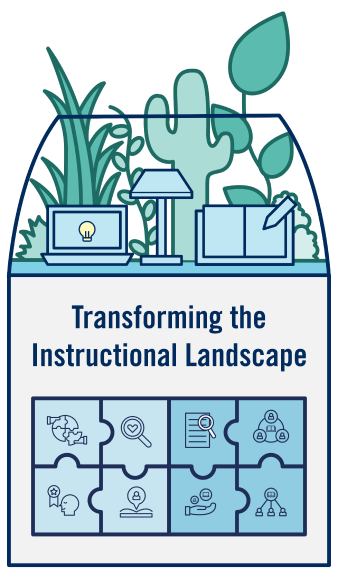
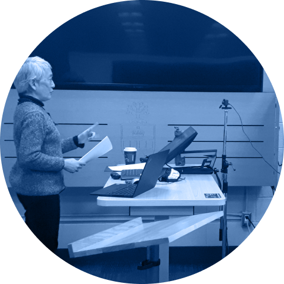

Transforming the Instructional Landscape (TIL) is a hub of collaboration, community and learning space design
that sits at the crossroads of multiple departments at UofT.
Stakeholder engagement is central to TIL, and we are always looking for instructors and staff at U of T to
become involved in our work. Those involved with TIL can receive support in exploring technology, learning
methods and learning space innovation.
TIL not only focuses on classroom renovations and technology enhancement, but it takes a more holistic approach
to exploring best practices for learning space design, whether they be online or in-person.

Transforming the Instructional Landscape (TIL)
Looking to get in touch with TIL? We’d love to hear from you!
Contact Us >
Contact Us >

See Our News and Reports >
About Us >
Our Approach >
About
Home
Initiatives
Classroom Redesign
News and Reports

Contact Us
Over the years, many teaching staff have found value in collaborating with the TIL community to develop their
own accessible, creative, and innovative approaches to learning and teaching at UofT.

Learn About Our Initiatives >